Início / Manutenção de piscinas / Manual da gerência
O dia inteiro da equipe na palma da mão
O painel mostra o que pede ação: alertas, pendências e atrasos. O que está em dia fica recolhido. Clientes, escala e produtos ficam nas guias ao lado.
Acesso
Seu link de responsável abre o Painel. Como o dos técnicos, ele é pessoal: não encaminhe. Abra no Chrome e use Adicionar à tela inicial para ter o ícone no celular.
No topo ficam as guias Painel · Clientes · Escala · Produtos. A guia Produtos mostra quantos pedidos estão em aberto.
Painel do dia
Os quatro números resumem o dia: previstas, registradas, pendentes e alertas. Toque num número para ir direto à parte dele.
- Use ‹ › ou a data para ver outro dia.
- O painel se atualiza sozinho a cada minuto.
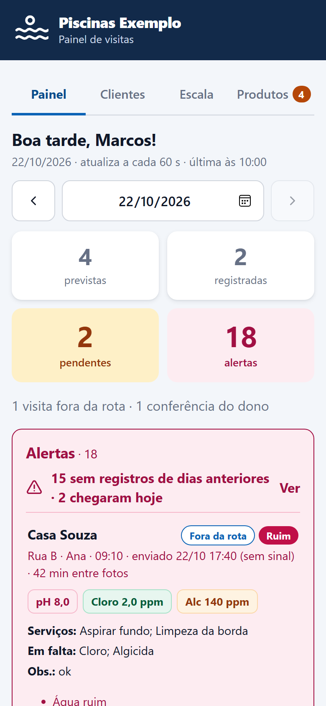
Alertas
Ficam em vermelho e abertos, porque pedem ação:
- água ruim ou medição fora da faixa;
- foto que não é do dia da visita ou registro feito depois do dia;
- piscinas de dias anteriores ainda sem registro (toque em Ver).
Cada visita mostra o técnico, a hora, as medições, os serviços feitos, os produtos em falta, as fotos antes e depois e o link Histórico.
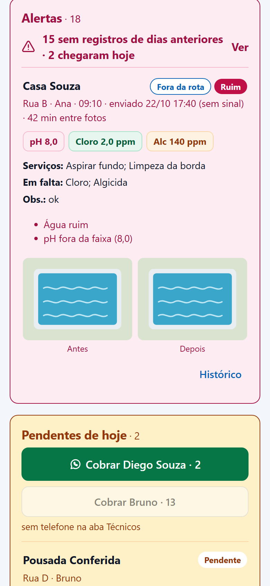
Pendentes e cobrança
Em âmbar ficam as piscinas de hoje ainda sem registro. O botão Cobrar abre o seu WhatsApp com a mensagem pronta: a lista das piscinas e o link do técnico. Você confere e envia; nada sai sozinho.
Botão apagado com sem telefone quer dizer que falta o WhatsApp do técnico no cadastro.
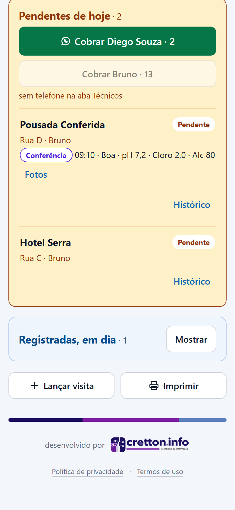
Registradas, lançar visita e imprimir
- Registradas, em dia fica recolhida: toque em Mostrar para ver.
- Lançar visita registra uma visita sua, de conferência. Ela não conta como visita do técnico.
- Imprimir gera a folha do dia.
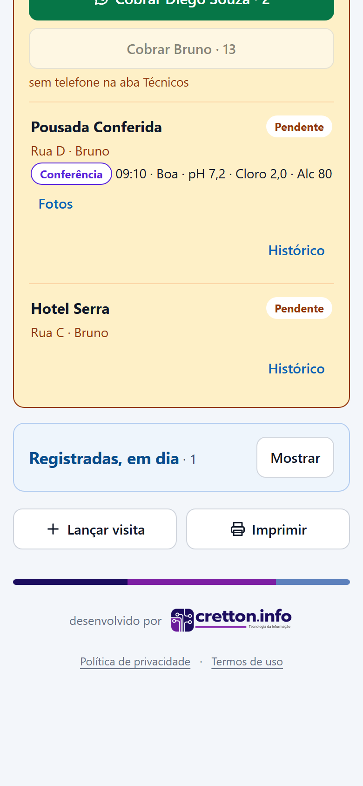
Histórico e relatório em PDF
Toque em Histórico numa visita para ver as visitas da piscina nos últimos 30 dias. Gerar relatório PDF monta um relatório com as fotos, pronto para compartilhar com o cliente. Ele também fica guardado.
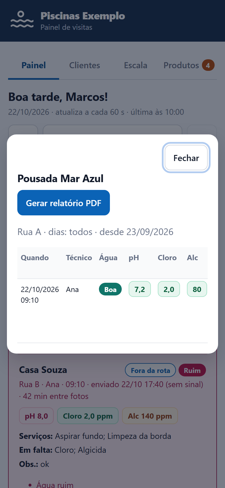
Clientes
Busque pelo nome, endereço ou técnico, ou toque em Novo cliente. No cadastro:
- nome, endereço e dias da visita;
- responsável: trocar aqui vale a partir de hoje (para um período, use a Escala);
- WhatsApp do cliente, usado no envio da lista de produtos;
- observações, que o técnico vê ao abrir a piscina;
- reposição de produtos: pedir aprovação ou automática.
Cliente que saiu é desativado, não apagado: o histórico continua.
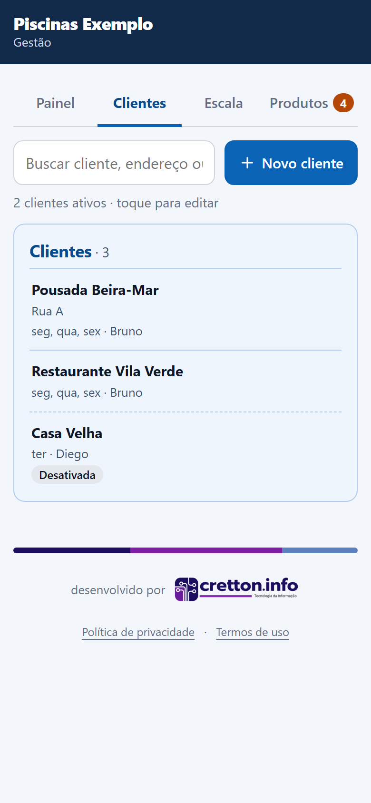
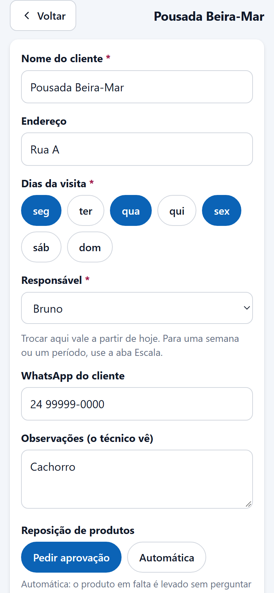
Escala
Mostra quem cuida de cada piscina hoje, agrupado por técnico. Filtre por nome ou veja todos.
- Trocar responsável: escolha o técnico e se a troca é temporária (com início e fim, para folga ou férias) ou definitiva.
- Troca temporária aparece com o aviso Só no período e pode ser cancelada.
- Trocas nunca mudam o passado: o que já foi registrado continua com quem fez.
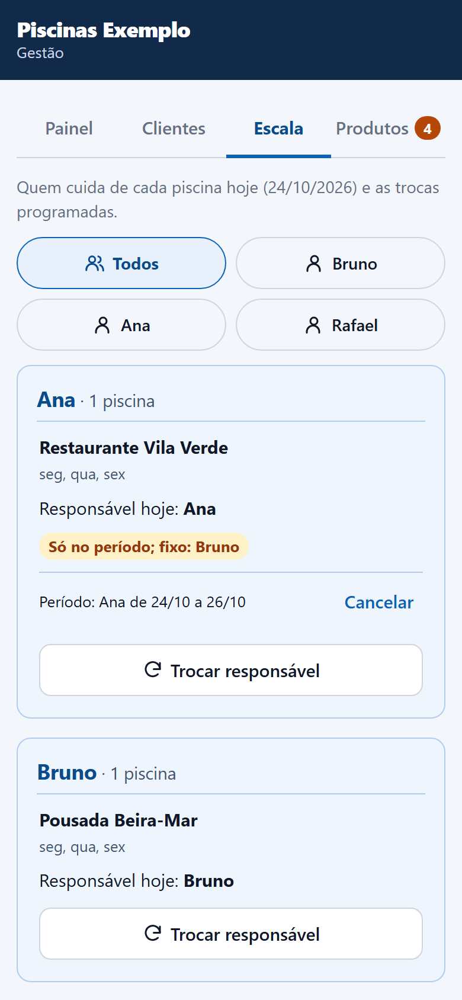
Produtos e pedidos
O que o técnico marca como em falta vira um pedido, que você acompanha até a entrega. Veja por cliente ou por produto.
- Em falta: o técnico informou na visita.
- Enviar ao cliente abre o pré-orçamento: ajuste a quantidade de cada item com – / +, confira o preço e o total e toque em Enviar pelo WhatsApp. A mensagem sai com o preço de cada item e o total estimado.
- Aprovado ou Recusado, conforme a resposta.
- Entregue, com quem levou.
Cliente com reposição automática pula a aprovação. Se o produto deixou de ser preciso, use Não precisa mais. O que foi concluído fica na lista dos últimos 14 dias.
O preço vem do catálogo de produtos. Produto sem preço aparece como a combinar e fica fora do total; preço com mais de 60 dias aparece com o aviso confira. Depois de enviado, o pedido guarda a quantidade e o valor.
Preços, no topo da guia Produtos, abre o catálogo. Toque num produto para mudar a unidade, o preço e a data do preço; ao mudar o preço, a data vira hoje. Novo produto cadastra um item, que também aparece como botão para os técnicos. Produto que saiu de linha é desativado, não apagado.
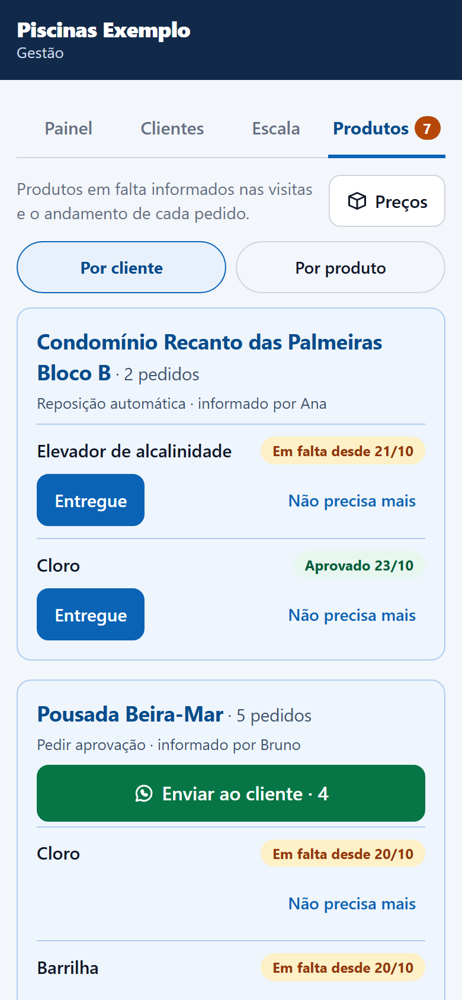
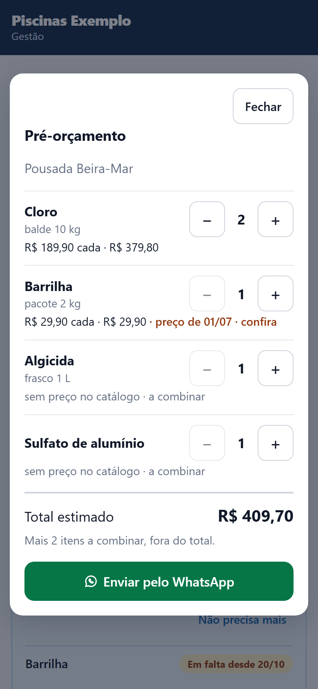
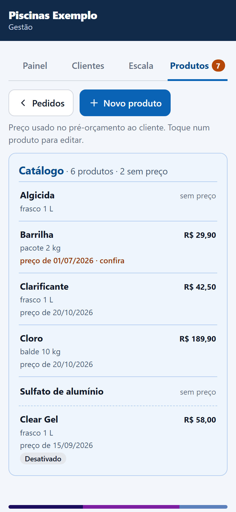
As telas deste manual usam dados fictícios. Os nomes de empresa, clientes e técnicos não são reais.